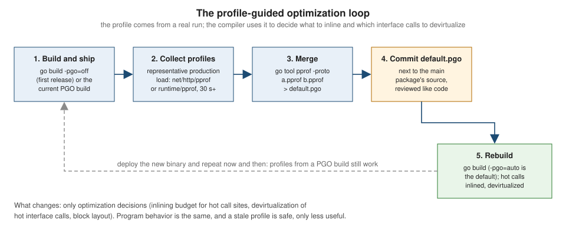

Performance and PGO
|
This content was generated with the assistance of AI and should be verified against the official documentation before being relied on in production. |
This page is written against Go 1.27 (go1.27.2), checked on 2026-10-18; every go.mod shown has the line go 1.27.
Go is fast enough for most programs without any tuning: the compiler is deliberately simple, the garbage collector is
concurrent and the standard library is written with allocation in mind. When a program is still too slow or too
hungry, the way forward is the same in every language: measure, find the hot spot, change one thing, measure again.
This page is the "change one thing" half. It lists what the compiler already does for you (so you do not undo it),
the optimizations you can enable with a profile (profile-guided optimization, PGO), and the handful of source-level
techniques that routinely matter in Go: avoiding allocations, converting between strings and byte slices cheaply,
preallocating, laying out structs, and keeping concurrent counters off the same cache line.
The measuring half lives on two other pages: Benchmarks, Fuzzing and synctest
(how to write a trustworthy benchmark, b.Loop, -benchmem, benchstat) and
Profiling, Tracing and Diagnostics (CPU, heap,
mutex and block profiles, execution traces, runtime/metrics). What happens to the memory you allocate is covered by
Memory Management and Garbage Collection
(GOGC, GOMEMLIMIT, the Green Tea collector). Related background:
Pointers and Value Semantics (stack versus heap),
Types and Values and
Structs and Embedding (sizes, alignment, padding),
Strings, Runes and UTF-8,
Arrays and Slices,
Maps,
Iterators and Range over Func,
Sync and Atomics and
unsafe and Low-Level Programming.
The same topic in other languages: Rust performance and profiling,
C performance, C++ performance
and C# unsafe code, spans and performance.
Every example was compiled, vetted with go vet, formatted with gofmt and run with Go 1.27.2 on an Apple M5
(darwin/arm64, ten cores). Allocation counts and compiler messages are the same on every machine for a given
toolchain. Times and speed-ups are not: they are real measurements from this one machine on a laptop that was doing
other things, shown to illustrate the shape of the result, never as numbers to expect. The go.mod of the example
module is:
module example.com/shelf
go 1.27The rules of the game
Three rules decide whether tuning pays off.
-
Measure before you change anything. Programmers are poor at guessing where time goes. The cost model of Go is simple (allocation, copying, locking, system calls and cache misses dominate), but which of them dominates in your program is an empirical question.
-
Change one thing at a time and measure again. A change that does not show up in a benchmark or a profile did not help, whatever it looks like in the source.
-
Optimize the algorithm and the allocations first. An
O(n log n)replacement for anO(n^2)loop beats any compiler flag. Among micro-optimizations, removing an allocation from a hot path is the most reliable win in Go, because every allocation costs time now and garbage-collection work later.
The workflow that follows from them, and the page of this site that covers each step:
| Step | Tool | Where it is covered |
|---|---|---|
Reproduce the slowness |
A benchmark with |
|
Compare two versions |
|
the same page |
Find where time and memory go |
|
|
Understand what the compiler did |
|
this page |
Reduce allocations and copying |
Source changes, verified by |
this page |
Let the compiler use real behaviour |
PGO with |
this page |
Tune the collector |
|
Source: Diagnostics
A worked measurement: strings, slices and maps
The shelf catalogue renders lists of titles all the time, so a small package compares four ways to join them, two ways to build a slice of identifiers, two ways to format a label and two ways to count keys in a map. Each pair differs in exactly one thing.
// Package perf compares ways to build the same results.
package perf
import (
"fmt"
"strconv"
"strings"
)
// ConcatPlus builds a comma separated list with repeated concatenation.
func ConcatPlus(titles []string) string {
s := ""
for i, t := range titles {
if i > 0 {
s += ", "
}
s += t
}
return s
}
// ConcatBuilder uses a strings.Builder with no size hint.
func ConcatBuilder(titles []string) string {
var b strings.Builder
for i, t := range titles {
if i > 0 {
b.WriteString(", ")
}
b.WriteString(t)
}
return b.String()
}
// ConcatGrow sizes the builder once.
func ConcatGrow(titles []string) string {
n := 2 * len(titles)
for _, t := range titles {
n += len(t)
}
var b strings.Builder
b.Grow(n)
for i, t := range titles {
if i > 0 {
b.WriteString(", ")
}
b.WriteString(t)
}
return b.String()
}
// ConcatJoin lets the standard library do the sizing.
func ConcatJoin(titles []string) string { return strings.Join(titles, ", ") }
// IDsAppend grows the result as it goes.
func IDsAppend(n int) []string {
var out []string
for i := range n {
out = append(out, strconv.Itoa(i))
}
return out
}
// IDsPrealloc knows the final length up front.
func IDsPrealloc(n int) []string {
out := make([]string, 0, n)
for i := range n {
out = append(out, strconv.Itoa(i))
}
return out
}
// LabelSprintf formats with fmt.
func LabelSprintf(n int) string { return fmt.Sprintf("loan-%d", n) }
// LabelConcat formats with strconv.
func LabelConcat(n int) string { return "loan-" + strconv.Itoa(n) }
// CountGrow builds a map without a size hint.
func CountGrow(keys []string) map[string]int {
m := map[string]int{}
for _, k := range keys {
m[k]++
}
return m
}
// CountHint sizes the map for the number of keys.
func CountHint(keys []string) map[string]int {
m := make(map[string]int, len(keys))
for _, k := range keys {
m[k]++
}
return m
}Source: strings: Builder
The benchmarks use b.Loop and b.ReportAllocs, and assign every result to a package-level variable so that the
compiler cannot discard the work (with b.Loop it also cannot, see
Benchmarks, Fuzzing and synctest).
package perf
import (
"strconv"
"testing"
)
var titles = func() []string {
t := make([]string, 100)
for i := range t {
t[i] = "Title number " + strconv.Itoa(i)
}
return t
}()
var sinkS string
func BenchmarkConcat(b *testing.B) {
funcs := []struct {
name string
f func([]string) string
}{
{"plus", ConcatPlus},
{"builder", ConcatBuilder},
{"grow", ConcatGrow},
{"join", ConcatJoin},
}
for _, fn := range funcs {
b.Run(fn.name, func(b *testing.B) {
b.ReportAllocs()
for b.Loop() {
sinkS = fn.f(titles)
}
})
}
}
var sinkIDs []string
func BenchmarkIDs(b *testing.B) {
b.Run("append", func(b *testing.B) {
b.ReportAllocs()
for b.Loop() {
sinkIDs = IDsAppend(1000)
}
})
b.Run("prealloc", func(b *testing.B) {
b.ReportAllocs()
for b.Loop() {
sinkIDs = IDsPrealloc(1000)
}
})
}
func BenchmarkLabel(b *testing.B) {
b.Run("sprintf", func(b *testing.B) {
b.ReportAllocs()
for i := 0; b.Loop(); i++ {
sinkS = LabelSprintf(i)
}
})
b.Run("strconv", func(b *testing.B) {
b.ReportAllocs()
for i := 0; b.Loop(); i++ {
sinkS = LabelConcat(i)
}
})
}
var sinkM map[string]int
func BenchmarkCount(b *testing.B) {
keys := make([]string, 1000)
for i := range keys {
keys[i] = "k" + strconv.Itoa(i)
}
b.Run("nohint", func(b *testing.B) {
b.ReportAllocs()
for b.Loop() {
sinkM = CountGrow(keys)
}
})
b.Run("hint", func(b *testing.B) {
b.ReportAllocs()
for b.Loop() {
sinkM = CountHint(keys)
}
})
}Source: testing: B.Loop
go test -run '^$' -bench . -benchmem ./perfgoos: darwin
goarch: arm64
pkg: example.com/shelf/perf
cpu: Apple M5
BenchmarkConcat/plus-10 46561 27491 ns/op 178513 B/op 198 allocs/op
BenchmarkConcat/builder-10 780880 1492 ns/op 5360 B/op 9 allocs/op
BenchmarkConcat/grow-10 1000000 1021 ns/op 1792 B/op 1 allocs/op
BenchmarkConcat/join-10 1000000 1411 ns/op 1792 B/op 1 allocs/op
BenchmarkIDs/append-10 60566 23529 ns/op 38016 B/op 909 allocs/op
BenchmarkIDs/prealloc-10 63534 16405 ns/op 19264 B/op 901 allocs/op
BenchmarkLabel/sprintf-10 21099147 54.44 ns/op 24 B/op 2 allocs/op
BenchmarkLabel/strconv-10 36762123 35.25 ns/op 23 B/op 1 allocs/op
BenchmarkCount/nohint-10 13058 89998 ns/op 109016 B/op 22 allocs/op
BenchmarkCount/hint-10 62511 17876 ns/op 54656 B/op 6 allocs/opSource: cmd/go: Testing flags
Read the B/op and allocs/op columns first; they are the same on every machine, while ns/op moves by tens of
percent between runs on a busy laptop (the plus line alone varied between 27 and 76 microseconds across the runs made
while writing this page). The pairs tell a consistent story:
| Slower version | Faster version | What changed (stable numbers from the run above) |
|---|---|---|
|
|
Each |
|
|
A builder with no hint doubles its buffer as it grows (the same growth as |
|
|
|
|
|
|
|
|
|
strings.Join (the join benchmark) is as good as the hand-written Grow version and shorter; it is the first thing to
reach for. Each of these techniques is explained in its own section below.
Finding the line: a memory profile
When allocs/op is high and the source is large, a heap profile names the lines. For a micro-benchmark you can ask for
every allocation to be recorded with -memprofilerate=1 (for real programs leave the default sampling rate alone: recording every
allocation slows the program down a great deal):
go test -run '^$' -bench 'Concat/plus' -benchtime 2s -memprofile mem.out -memprofilerate 1 ./perf
go tool pprof -sample_index=alloc_space -list ConcatPlus perf.test mem.outROUTINE ======================== example.com/shelf/perf.ConcatPlus in .../shelf/perf/perf.go
1.66GB 1.66GB (flat, cum) 99.85% of Total
. . 11:func ConcatPlus(titles []string) string {
. . 12: s := ""
. . 13: for i, t := range titles {
. . 14: if i > 0 {
844.88MB 844.88MB 15: s += ", "
. . 16: }
857.54MB 857.54MB 17: s += t
. . 18: }
. . 19: return s
. . 20:}Source: Profiling Go Programs
(The totals depend on how many iterations the benchmark ran; the split between the two statements does not.) A CPU
profile of the same benchmark on this machine is dominated by runtime frames such as kevent, madvise and
pthread_cond_wait: the program spends its time allocating and in the collector’s helpers, and the memory profile is
the one that points at the cause. Choosing the right profile for the symptom is the subject of
Profiling, Tracing and Diagnostics.
What the compiler already does
The gc compiler runs a modest set of optimizations on every build: constant folding, dead-code elimination,
inlining, escape analysis, devirtualization of calls whose concrete type is known, bounds-check elimination, register
allocation and a handful of peephole rewrites. It does not do loop unrolling, auto-vectorization or aggressive
inter-procedural optimization; it trades peak speed for build times measured in seconds. That is why the source-level
techniques below matter more in Go than in a language with an optimizing C++ compiler.
Two flags show what happened. Both are passed through go build -gcflags, which applies only to the packages named
on the command line unless you write all= in front (for example -gcflags=all=-m):
| Flag | Effect |
|---|---|
|
Print optimization decisions: which functions can be inlined, which calls were inlined, what escapes to the heap. |
|
The same with the reason and the inlining cost of each function. |
|
Disable inlining. Useful to see how much it matters, and to get stack traces that match the source exactly. |
|
Disable optimizations (what debuggers such as Delve use). |
|
Report every bounds check the compiler could not remove. |
|
Report what PGO decided (see below). |
|
Print the generated assembly. |
Source: cmd/compile
The -d debug options are for compiler developers: they are listed by go tool compile -d help, and they may change
or disappear in any release. They are fine for investigations like the ones on this page, and not for build scripts.
Inlining
Inlining replaces a call by the body of the called function. It removes the call overhead, but the larger benefit is
that it lets the compiler optimize the combined code: constants propagate, values stop escaping, small allocations
move to the stack. The compiler gives every function a cost (roughly the number of nodes in its syntax tree) and
inlines calls to functions whose cost is at most 80. Functions that call other functions can still be inlined
(mid-stack inlining), as long as the total stays under the budget. Loops, select statements, type switches and
closures no longer prevent inlining either: the list of constructs that do has become short.
The package below holds functions chosen to show the cases.
// Package inl shows what the compiler's optimization passes report.
package inl
import (
"fmt"
"example.com/shelf/catalog"
)
// Pages is cheap enough to inline.
func Pages(words int) int { return (words + 249) / 250 }
// Describe calls fmt.Sprintf, which is too expensive to inline into callers
// but cheap to inline itself.
func Describe(b catalog.Book) string {
return fmt.Sprintf("%s (%s)", b.Title, b.ISBN)
}
// Checksum has a loop and a branch; it is bigger than Pages.
func Checksum(d string) int {
sum := 0
for i := 0; i < len(d); i++ {
w := 1
if i%2 == 1 {
w = 3
}
sum += int(d[i]-'0') * w
}
return sum % 10
}
//go:noinline
func Slow(n int) int { return n * 2 }
// NewBook returns a pointer to a local, which therefore escapes.
func NewBook(title string) *catalog.Book {
b := catalog.Book{Title: title}
return &b
}
// Total keeps its local on the stack.
func Total(titles []string) int {
b := catalog.Book{Title: titles[0]}
p := &b
return len(p.Title)
}
// Print boxes its argument into an interface.
func Print(n int) {
fmt.Println(n)
}
// Lookup calls through an interface whose concrete type is known locally.
func Lookup(isbn catalog.ISBN) bool {
var s catalog.Store = catalog.NewMemStore()
_, ok := s.Get(isbn)
return ok
}
func Use() int {
return Pages(1000) + Slow(2) + Checksum("9780134190440")
}Source: cmd/compile
package inl
import (
"strings"
"sync"
)
var mu sync.Mutex
// Locked uses defer, which keeps a function from being inlined.
func Locked(n *int) {
mu.Lock()
defer mu.Unlock()
*n++
}
// Spawn starts a goroutine, another construct that blocks inlining.
func Spawn(f func()) {
go f()
}
// Slugify is simply too big for the inlining budget of 80.
func Slugify(title string) string {
var b strings.Builder
prevDash := true
for _, r := range strings.ToLower(title) {
switch {
case r >= 'a' && r <= 'z', r >= '0' && r <= '9':
b.WriteRune(r)
prevDash = false
case !prevDash:
b.WriteByte('-')
prevDash = true
}
}
return strings.TrimSuffix(b.String(), "-")
}go build -gcflags='-m=2' ./inl 2>&1 | grep -E 'can(not)? inline'inl/inl.go:11:6: can inline Pages (cost 6)
inl/inl.go:15:6: can inline Describe (cost 69)
inl/inl.go:20:6: can inline Checksum (cost 46)
inl/inl.go:33:6: cannot inline Slow: marked go:noinline
inl/inl.go:36:6: can inline NewBook (cost 10)
inl/inl.go:42:6: can inline Total (cost 19)
inl/inl.go:49:6: can inline Print (cost 78)
inl/inl.go:54:6: can inline Lookup (cost 80)
inl/inl.go:60:6: cannot inline Use: function too complex: cost 121 exceeds budget 80
inl/limits.go:11:6: cannot inline Locked: unhandled op DEFER
inl/limits.go:13:2: can inline Locked.deferwrap1 (cost 76)
inl/limits.go:18:6: cannot inline Spawn: unhandled op GO
inl/limits.go:23:6: cannot inline Slugify: function too complex: cost 245 exceeds budget 80Source: cmd/compile
(The compiler prints the function body after each cost; it is shortened here.) Reading the result:
-
Pagescosts 6,Checksum(a loop and a branch) 46, and both are inlined intoUse.Describecosts 69: it is inlinable, but only because a call to another function (herefmt.Sprintf) is charged a fixed price by the inliner, not the cost of its body. -
Slowis excluded by the//go:noinlinedirective. Use that directive in benchmarks that must keep a call alive and almost nowhere else. -
Useis not inlinable: it inlinesPagesandChecksuminto itself, and the sum of their costs plus its own (121) exceeds the budget of 80. Inlining is therefore not transitive without limit. -
Slugifycosts 245 and is "too complex". Splitting a large function so that its small, hot path is a separate function is a legitimate technique when a profile shows the call overhead matters. -
Lockedis rejected withunhandled op DEFER, andSpawnwithunhandled op GO. A function that containsdeferorgo, or that callsrecover, is not inlined (the compiler instead outlines the deferred call,Locked.deferwrap1, which is itself small enough to inline). Functions with aselect, a labeled loop, a type switch or a closure are inlinable on this toolchain (a throwaway check with-m=2reported them as such). The list of unsupported constructs shrinks from release to release, so check the messages from your own toolchain, not an old article. -
Lookupcosts exactly 80, the largest inlinable cost, which is a reminder that the budget is small: adding one more statement would push it over.
go build -gcflags='-l -m' ./inl 2>&1 | grep -c 'inlining call'0Source: cmd/compile
With -l, the same build reports no inlined call at all (without it, the package inlines fifteen calls, including the
sync.Mutex and strings.Builder methods that Locked and Slugify use). Comparing a benchmark with and without
-gcflags=-l is the quickest way to learn how much inlining contributes to your code.
Some recent changes to be aware of:
-
Go 1.22 started interleaving devirtualization and inlining, so the result of one can enable the other, and introduced a new inliner as an experiment (
GOEXPERIMENT=newinliner) that uses heuristics to inline more at call sites that look important, such as calls in loops, and less on panic paths. It is not on by default in Go 1.27 (turning it on changes the-m=2output for theinlpackage above). -
Go 1.26 stopped
B.Loopfrom preventing inlining in the loop body, so benchmarks written withb.Loopmeasure the inlined code that production would run. -
Go 1.27 gives closures simpler names and may merge identical function literals after inlining. It does not change behavior, but tests that compare code pointers or symbol names of function literals may be affected.
-
A call to a function value (a closure stored in a variable) can be inlined only when the compiler can prove which function it is. PGO extends this to hot indirect calls (below).
Escape analysis and allocation
The compiler decides where each value lives: on the goroutine stack, which is free to allocate and free, or on the
heap, which costs an allocation and later garbage-collection work. A value stays on the stack if the compiler can prove
that no reference to it outlives the function. The complete treatment is in
Pointers and Value Semantics; here is the same package seen through -m.
go build -gcflags=-m ./inl 2>&1 | grep -E 'moved to heap|escapes to heap|leaking param'inl/inl.go:15:15: leaking param: b
inl/inl.go:16:33: b.Title escapes to heap
inl/inl.go:16:42: b.ISBN escapes to heap
inl/inl.go:36:14: leaking param: title
inl/inl.go:37:2: moved to heap: b
inl/inl.go:50:14: n escapes to heap
inl/inl.go:55:43: &catalog.MemStore{...} escapes to heap
inl/inl.go:55:43: map[catalog.ISBN]catalog.Book{} escapes to heap
inl/limits.go:18:12: leaking param: fSource: cmd/compile
-
moved to heap: b(line 37):NewBookreturns&b, so the book must outlive the call. This is the classic case, and it is fine when the caller needs a pointer; the cost is one allocation. -
Total(lines 42 to 46) takes the address of a local too but never lets it leave, so there is no message and no allocation: taking an address does not by itself move a value to the heap. -
n escapes to heap(line 50):fmt.Println(n)converts theinttoany. Boxing a small integer, string or struct into an interface allocates unless the compiler can see the interface does not escape.fmtfunctions take...any, so every call on a hot path costs allocations;strconv,Append*functions andio.WriteStringdo not. -
leaking param: bandleaking param: title: the parameter’s contents flow to the heap or to the result. That is information for the caller: an argument passed to a leaking parameter cannot stay on the caller’s stack. -
&catalog.MemStore{...} escapes to heap(line 55): the store allocated by the inlined constructor lives on the heap even though the call on it is devirtualized (next section).
The practical rules that follow:
-
Return values by value when they are small; return pointers when the caller needs shared identity or the value is large and mutated. "Pointers are faster" is not a rule: a pointer that makes a value escape is slower than a copy.
-
Do not store a pointer to a local in a longer-lived structure, a channel or a global, unless you mean it.
-
Avoid
anyandfmton hot paths. Prefer concrete types, generics (Generics) or typed helpers. -
Interface method calls through a value that the compiler cannot see through cannot be inlined, and their receivers often escape.
-
Measure with
allocs/op, not with-malone:-mshows decisions about individual expressions, and the numbers decide whether they matter.
Slices whose size is only known at run time
Before Go 1.25 a make([]int, n) with a non-constant n always allocated on the heap. Go 1.25 and 1.26 teach the
compiler to put the backing store of such slices (and of slices grown by append in a function that does not let
them escape) on the stack when they are small enough. The program below counts heap allocations with
testing.AllocsPerRun.
// Command stk counts heap allocations of slices whose size is only known at run time.
package main
import (
"fmt"
"testing"
)
var sink int
// sumTo allocates a scratch slice whose length is a run-time value.
func sumTo(n int) int {
scratch := make([]int, n)
for i := range scratch {
scratch[i] = i
}
t := 0
for _, v := range scratch {
t += v
}
return t
}
// collect appends to a local slice that never leaves the function.
func collect(n int) int {
var out []int
for i := range n {
out = append(out, i)
}
return len(out)
}
func main() {
for _, n := range []int{4, 64, 4096} {
fmt.Printf("make([]int, %4d): %.0f allocs/op\n", n,
testing.AllocsPerRun(1000, func() { sink = sumTo(n) }))
}
for _, n := range []int{4, 64, 4096} {
fmt.Printf("append x %4d: %.0f allocs/op\n", n,
testing.AllocsPerRun(1000, func() { sink = collect(n) }))
}
}Source: testing: AllocsPerRun
go run ./stkmake([]int, 4): 0 allocs/op
make([]int, 64): 1 allocs/op
make([]int, 4096): 1 allocs/op
append x 4: 0 allocs/op
append x 64: 4 allocs/op
append x 4096: 13 allocs/opSource: Go 1.26 release notes: Compiler
Both make and append are reported as does not escape by -m for every size, yet 4 elements need no allocation
and 64 do: a small slice lives in a stack buffer chosen by the compiler, and a larger one still comes from the heap.
(The append rows also show the growth: four allocations while a slice grows to 64 elements, thirteen to reach 4096.) The
exact thresholds are an implementation detail that has changed between releases; do not design around them. The
release notes warn that this optimization can expose latent unsafe.Pointer bugs, and give the escape hatch
-gcflags=all=-d=variablemakehash=n and the bisect tool (-compile=variablemake) to find the allocation
responsible. The takeaway is that old advice such as "always pass a pre-sized buffer from outside" is worth
re-measuring on a current toolchain.
Size-specialized allocation in Go 1.27
Go 1.27 makes the compiler call allocation routines specialized by size class for small objects (under 80 bytes),
which the release notes say cuts the cost of those allocations by up to 30 percent, about 1 percent in real
allocation-heavy programs, at the price of roughly 60 KB more binary. There is nothing to do to benefit from it;
GOEXPERIMENT=nosizespecializedmalloc turns it off at build time, an opt-out the release notes expect to remove in Go 1.28.
Other recent allocator and collector changes (Swiss-table maps in Go 1.24, the Green Tea collector enabled by default
in Go 1.26) are described in Memory Management and Garbage Collection
and Maps.
Source: Go 1.27 release notes
Devirtualization
A call through an interface is an indirect call: it cannot be inlined and it blocks escape analysis of the
receiver. When the compiler can see the concrete type behind the interface value, it replaces the indirect call by a
direct one. Lookup above does exactly that:
go build -gcflags=-m ./inl 2>&1 | grep devirtinl/inl.go:56:16: devirtualizing s.Get to *catalog.MemStoreThis static devirtualization works only when the concrete type is known within the function (typically a variable
assigned from a constructor). It does not help for an interface that arrives as a parameter, which is the common case
for a catalog.Store passed through a service; that is where profile-guided devirtualization (below) can help.
The guideline for API design remains the one from
Interfaces: accept interfaces, return concrete types, and do not
introduce an interface only to get a mock if a function-typed field would do.
Bounds-check elimination
Every v[i] on a slice or array has an implicit check that i is in range, which panics otherwise. When the compiler
can prove the index is valid it removes the check. You can help it with a hint: an expression the compiler can use
as a proof. The package below shows the patterns.
// Package bce shows bounds-check elimination.
package bce
// SumIndex checks every access: the compiler cannot relate i to len(w).
func SumIndex(v, w []int) int {
s := 0
for i := range v {
s += v[i] * w[i]
}
return s
}
// SumHint proves len(w) >= len(v) once, so the loop needs no checks.
func SumHint(v, w []int) int {
w = w[:len(v)]
s := 0
for i := range v {
s += v[i] * w[i]
}
return s
}
// SumRange iterates the elements directly: nothing to check.
func SumRange(v []int) int {
s := 0
for _, x := range v {
s += x
}
return s
}
// Header reads four bytes; one early check covers all of them.
func Header(b []byte) uint32 {
_ = b[3]
return uint32(b[0]) | uint32(b[1])<<8 | uint32(b[2])<<16 | uint32(b[3])<<24
}
// HeaderNoHint repeats a check for each index.
func HeaderNoHint(b []byte) uint32 {
return uint32(b[0]) | uint32(b[1])<<8 | uint32(b[2])<<16 | uint32(b[3])<<24
}go build -gcflags=-d=ssa/check_bce/debug=1 ./bcebce/bce.go:8:16: Found IsInBounds
bce/bce.go:15:7: Found IsSliceInBounds
bce/bce.go:34:7: Found IsInBounds
bce/bce.go:40:17: Found IsInBounds
bce/bce.go:40:32: Found IsInBounds
bce/bce.go:40:50: Found IsInBounds
bce/bce.go:40:69: Found IsInBoundsThe output lists the checks that remain:
-
Line 8, column 16 is
w[i]inSumIndex: ranging overvprovesi < len(v), but nothing relateslen(w)tolen(v), sow[i]is checked on every iteration. (v[i]is not reported.) -
SumHint(line 15) has a single check, the slice expressionw[:len(v)]that panics once ifwis too short. Afterwards the compiler knowslen(w) >= len(v)and removes the check inside the loop. This is the standard idiom: re-slice the other operands to the length of the one you range over. -
SumRangehas none, because ranging over the elements involves no indexing. -
Header(line 34) has one check,_ = b[3], after which the compiler knows the indices 0 to 3 are valid. The statement_ = b[3]is the idiom the standard library uses inencoding/binary.HeaderNoHint(line 40) is checked four times.
Bounds-check elimination is a micro-optimization: each check is a compare and a never-taken branch. It matters in tight numeric
or parsing loops where the check is a measurable fraction of the work, and nowhere else. Write the clear version, look
at check_bce only for a loop that a profile shows is hot, and keep the hint if it is simple. Do not trade
away the safety that the check provides: the way to remove checks is to prove the bound to the compiler, not to
reach for unsafe.
Profile-guided optimization
Profile-guided optimization (PGO, also called feedback-directed optimization) feeds a CPU profile from representative
runs back to the compiler for the next build. The compiler uses it to make better decisions on the code that matters:
it inlines hot call sites more aggressively than the normal budget allows and it devirtualizes hot interface calls.
PGO was a preview in Go 1.20 and is generally available since Go 1.21; since Go 1.21 go build uses it automatically
when a file named default.pgo is present in the main package’s directory. The official guide is
Profile-guided optimization; this section explains it and then runs a small experiment.

What PGO changes
| Optimization | What the compiler does with the profile | Since |
|---|---|---|
Hot-call-site inlining |
Raises the inlining budget (to 2000 in the experiment below) for functions on hot paths, so a function that is too large for the normal budget of 80 is inlined where it is called most. |
1.21 |
Interface devirtualization |
Where the profile shows that an interface call almost always reaches one concrete type, the compiler emits a type check and a direct (inlinable) call to that type’s method, with the original indirect call as the fallback. |
1.21, more calls in 1.22 |
Function-value devirtualization |
The same for hot calls through a function value. The compiler’s debug option |
later releases |
Hot block alignment |
On |
1.23 |
Source: Go 1.23 release notes: Compiler
The Go project’s benchmarks of a representative set of programs show around 2 to 14 percent from PGO as of Go 1.22, and the guide expects gains to grow as more optimizations learn to use profiles. That figure is for large, real programs; for a small program, a micro-benchmark or a workload that is not dominated by calls the compiler could improve, the gain can be zero or negative (see the experiment below). PGO changes performance only, never behavior.
Collecting a profile
The compiler reads a CPU profile in the pprof format, which is what runtime/pprof and net/http/pprof produce. The
guide’s recommendation is to collect profiles from production, because an unrepresentative profile yields a binary
with little to no improvement. The simplest way is to expose net/http/pprof and download
/debug/pprof/profile?seconds=30 from a busy instance. The program below does that in miniature: it exposes the
handlers on a loopback port, keeps a goroutine busy and downloads a one-second CPU profile.
// Command collect starts a pprof endpoint on a local port, keeps the CPU
// busy for a moment and downloads a CPU profile the way a PGO pipeline
// would download one from a running service.
package main
import (
"compress/gzip"
"context"
"flag"
"fmt"
"io"
"log"
"net"
"net/http"
_ "net/http/pprof" // registers /debug/pprof/ on http.DefaultServeMux
"os"
"strings"
"time"
"example.com/shelf/catalog"
)
func main() {
out := flag.String("o", "collected.pprof", "where to write the profile")
seconds := flag.Int("seconds", 1, "profile duration (use 30 or more in production)")
flag.Parse()
// Bind to the loopback interface only: /debug/pprof must never be
// reachable from outside the machine without authentication.
ln, err := net.Listen("tcp", "127.0.0.1:0")
if err != nil {
log.Fatal(err)
}
srv := &http.Server{Handler: http.DefaultServeMux}
go srv.Serve(ln)
defer srv.Close()
// Stand-in for production traffic.
ctx, stop := context.WithCancel(context.Background())
defer stop()
go func() {
store := catalog.NewMemStore()
store.Put(catalog.Book{ISBN: "9780134190440", Title: "The Go Programming Language"})
for ctx.Err() == nil {
store.Get("9780134190440")
strings.ToUpper("a title that needs normalising")
}
}()
url := fmt.Sprintf("http://%s/debug/pprof/profile?seconds=%d", ln.Addr(), *seconds)
client := &http.Client{Timeout: time.Duration(*seconds+10) * time.Second}
resp, err := client.Get(url)
if err != nil {
log.Fatal(err)
}
defer resp.Body.Close()
f, err := os.Create(*out)
if err != nil {
log.Fatal(err)
}
defer f.Close()
n, err := io.Copy(f, resp.Body)
if err != nil {
log.Fatal(err)
}
f.Seek(0, io.SeekStart)
if _, err := gzip.NewReader(f); err != nil {
log.Fatalf("not a gzip stream: %v", err)
}
fmt.Println("status:", resp.Status)
fmt.Println("content type:", resp.Header.Get("Content-Type"))
fmt.Println("profile is gzip-compressed protobuf:", n > 0)
}Source: net/http/pprof
go run ./collect -o collected.pprof
go tool pprof -top -nodecount=5 collected.pprofstatus: 200 OK
content type: application/octet-stream
profile is gzip-compressed protobuf: trueFile: collect
Type: cpu
Time: 2026-10-18 03:23:54 CEST
Duration: 1.12s, Total samples = 900ms (80.50%)
Showing nodes accounting for 660ms, 73.33% of 900ms total
Showing top 5 nodes out of 42
flat flat% sum% cum cum%
400ms 44.44% 44.44% 680ms 75.56% strings.ToUpper
80ms 8.89% 53.33% 90ms 10.00% strings.(*Builder).WriteByte (inline)
60ms 6.67% 60.00% 60ms 6.67% runtime.kevent
60ms 6.67% 66.67% 60ms 6.67% runtime.madvise
60ms 6.67% 73.33% 90ms 10.00% runtime.mallocgcSmallNoScanSC4Source: cmd/pprof
(The Time and durations vary; the status, the application/octet-stream content type and the stack in the profile are
what to check.) Production notes:
-
Bind the pprof endpoints to the loopback interface or a separate admin port, never to a public address. The handlers expose goroutine stacks, command lines and a way to make the server do CPU-heavy work. See Profiling, Tracing and Diagnostics for the endpoints and for authentication options.
-
Profile a few instances at several times of the day, for the same wall-clock duration each, and merge them (below). A single 30-second profile of one idle instance can easily be unrepresentative, and long-running operations, traffic patterns that change during the day and uneven load balancing all skew it.
-
A command-line tool distributed to users cannot be profiled in production. The guide’s fallback is a representative benchmark or run, collected with
-cpuprofile, while warning that micro-benchmarks are usually bad sources because they exercise only a small part of the program. -
Profiles may come from other tools (Linux
perf, continuous-profiling services) if converted to pprof with symbolization, function start lines and samples that include inlined frames; the guide’s appendix lists the requirements. -
A profile is a build input like source code. The guide recommends committing it, so that builds are reproducible.
Merging profiles
Several profiles are merged into one with go tool pprof -proto. The merge is a plain sum of samples regardless of
how long each profile ran, which is why they should have the same duration:
go tool pprof -proto a.pprof b.pprof > default.pgoBuilding with a profile
| Command or file | Effect |
|---|---|
|
Picked up automatically by |
|
The default. For every main package in the build, use its |
|
Disable PGO, for comparison builds and to rule it out while debugging. |
|
Use this profile for every main package named on the command line. With several binaries in one command, run |
Properties worth knowing from the guide’s FAQ:
-
PGO applies to the whole program, so the standard library and your dependencies are recompiled with the profile too; the way your application uses a library shapes how that library is optimized.
-
The profile format is the same on every platform, so a profile from
linux/arm64can be used to build forwindows/amd64; code that differs between platforms (for instance the internals ofos) will not match. -
Build time: the first PGO build recompiles every package, then the results are cached. Before Go 1.23 large builds could take 100 percent longer; Go 1.23 reduced the overhead to single-digit percentages. (
go toollists apreprofiletool; it is an implementation detail of that work and not something to run by hand.) -
Binary size: PGO can make binaries slightly larger because of the extra inlining.
-
An unrepresentative profile "should not" make hot paths slower, the guide says; a case where PGO is slower than
-pgo=offshould be reported as a Go issue. -
Source stability: the compiler matches samples to source by function name and line offset within the function, so edits above or below a hot function, or moving it to another file in the same package, do not break matching; renaming it, moving it to another package or editing inside it does. Refresh profiles regularly, and expect new code to be unoptimized until a profile includes it.
-
Iterative stability: a profile collected from an already PGO-optimized binary is fine. This is what makes the collect-build-deploy loop in the figure workable, and it removes the need for a two-stage build.
-
One binary serving different workloads (a read-heavy and a write-heavy deployment of the same database server, say) has three options: a binary per workload with its own profile, a profile from the most important workload only, or a merged profile weighted by footprint.
An experiment
The pgo command of the shelf module is a small search workload: it scores 20 000 generated titles against five
queries through a Scorer interface, with one implementation used for 19 of every 20 calls (an interface call that is
hot but not monomorphic). bonus is deliberately a little over the normal inlining budget (cost 87), and fold is
small enough to inline everywhere.
// Command pgo is a small search workload used to try profile-guided
// optimization. It scores every title in a generated catalogue against a
// query through a Scorer interface.
package main
import (
"flag"
"fmt"
"log"
"os"
"runtime/pprof"
"time"
)
// Scorer rates how well a title matches a query.
type Scorer interface {
Score(title, query string) int
}
type prefixScorer struct{}
func (prefixScorer) Score(title, query string) int {
n := 0
for n < len(title) && n < len(query) && fold(title[n]) == fold(query[n]) {
n++
}
return n
}
type containsScorer struct{}
func (containsScorer) Score(title, query string) int {
best := 0
for i := 0; i+len(query) <= len(title); i++ {
n := 0
for n < len(query) && fold(title[i+n]) == fold(query[n]) {
n++
}
best = max(best, n)
}
return best
}
// fold lower-cases an ASCII letter. It is small enough to inline everywhere.
func fold(c byte) byte {
if 'A' <= c && c <= 'Z' {
return c + 'a' - 'A'
}
return c
}
// bonus is deliberately above the default inlining budget of 80, so only a
// profile can make the compiler inline it into the hot loop.
func bonus(title string, n int) int {
switch {
case n == 0:
return 0
case n == len(title):
return 100
case title[n-1] == ' ':
return 20 + n
case n > 8 && title[0] == 'T':
return 12 + n/2
case n > 4 && title[len(title)-1] == 's':
return 8 + n/3
case n > 2:
return 4 + n/4
}
if title[0] == 'A' || title[0] == 'a' {
return 2
}
return 1
}
func search(s Scorer, titles []string, query string) (best int, at int) {
for i, t := range titles {
score := s.Score(t, query)
score += bonus(t, score)
if score > best {
best, at = score, i
}
}
return best, at
}
func makeTitles(n int) []string {
words := []string{"Programming", "Go", "Systems", "Concurrency", "Practice", "Design", "Patterns", "Network"}
titles := make([]string, n)
x := uint32(1)
for i := range titles {
x = x*1664525 + 1013904223
titles[i] = words[x>>24%8] + " " + words[x>>16%8] + " " + words[x>>8%8]
}
return titles
}
func main() {
profile := flag.String("cpuprofile", "", "write a CPU profile to this file")
rounds := flag.Int("rounds", 40, "timed repetitions")
flag.Parse()
titles := makeTitles(20000)
queries := []string{"programming go", "systems", "concurrency practice", "net", "design patterns"}
// 95% of the calls use prefixScorer, the rest containsScorer: the
// interface call is hot but not monomorphic.
scorers := [20]Scorer{}
for i := range scorers {
scorers[i] = prefixScorer{}
}
scorers[19] = containsScorer{}
if *profile != "" {
f, err := os.Create(*profile)
if err != nil {
log.Fatal(err)
}
defer f.Close()
if err := pprof.StartCPUProfile(f); err != nil {
log.Fatal(err)
}
defer pprof.StopCPUProfile()
}
fastest := time.Duration(1<<63 - 1)
total := 0
for range *rounds {
start := time.Now()
for i := range 20 {
for _, q := range queries {
best, _ := search(scorers[i], titles, q)
total += best
}
}
fastest = min(fastest, time.Since(start))
}
fmt.Printf("checksum=%d fastest round=%v\n", total, fastest.Round(time.Microsecond))
}Source: Profile-guided optimization
First build without PGO and collect two profiles, then merge them into default.pgo:
go build -pgo=off -o nopgo .
./nopgo -cpuprofile a.pprof
./nopgo -cpuprofile b.pprof
go tool pprof -proto a.pprof b.pprof > default.pgo
go tool pprof -top -nodecount=6 default.pgoFile: nopgo
Type: cpu
Time: 2026-10-18 03:17:14 CEST
Duration: 2.03s, Total samples = 1360ms (66.95%)
Showing nodes accounting for 1310ms, 96.32% of 1360ms total
Showing top 6 nodes out of 21
flat flat% sum% cum cum%
450ms 33.09% 33.09% 1230ms 90.44% main.search
370ms 27.21% 60.29% 370ms 27.21% main.prefixScorer.Score
250ms 18.38% 78.68% 270ms 19.85% main.containsScorer.Score
140ms 10.29% 88.97% 140ms 10.29% main.bonus
80ms 5.88% 94.85% 80ms 5.88% runtime.pthread_cond_signal
20ms 1.47% 96.32% 20ms 1.47% runtime.pthread_mutex_lockSource: cmd/pprof
(The ./nopgo runs each print a checksum and the fastest of 40 rounds; those lines are omitted.) The profile says
what we expect: search and the two Score methods are hot, bonus is visible, and the collector’s helper threads
add some noise from runtime. Now build with PGO (the default, because default.pgo sits next to main.go) and compare what the
compiler did. The lines shown are those for the hot loop in search (lines 75 to 88):
go build -pgo=off -gcflags=-m=1 . 2>&1 | grep -E 'main.go:(7|8)[0-9]:'
echo ---
go build -gcflags=-m=1 . 2>&1 | grep -E 'main.go:(7|8)[0-9]:'./main.go:86:6: can inline makeTitles
./main.go:75:13: leaking param: s
./main.go:75:23: leaking param content: titles
./main.go:75:40: leaking param: query
./main.go:87:19: []string{...} does not escape
./main.go:88:16: make([]string, n) escapes to heap
---
./main.go:77:19: PGO devirtualizing interface call s.Score to prefixScorer.Score
./main.go:75:6: can inline search
./main.go:86:6: can inline makeTitles
./main.go:77:19: inlining call to prefixScorer.Score
./main.go:78:17: inlining call to bonus
./main.go:77:19: inlining call to fold
./main.go:77:19: inlining call to fold
./main.go:75:13: leaking param: s
./main.go:75:23: leaking param content: titles
./main.go:75:40: leaking param: query
./main.go:87:19: []string{...} does not escape
./main.go:88:16: make([]string, n) escapes to heapSource: Profile-guided optimization
Without PGO the call s.Score(t, query) on line 77 stays an interface call and bonus is not inlined. With PGO the
compiler reports PGO devirtualizing interface call s.Score to prefixScorer.Score, inlines that method and the two calls to
fold inside it into the loop, inlines bonus into search, and (further down the program) inlines search into
main. -d=pgodebug=1 shows the reasons:
go build -o /dev/null -gcflags=example.com/shelf/pgo=-d=pgodebug=1 .# example.com/shelf/pgo
hot-callsite-thres-from-CDF=0.7194244604316548
hot-node enabled increased budget=2000 for func=main.fold
hot-node enabled increased budget=2000 for func=main.prefixScorer.Score
hot-node enabled increased budget=2000 for func=main.containsScorer.Score
hot-node enabled increased budget=2000 for func=main.bonus
hot-node enabled increased budget=2000 for func=main.search
hot-budget check allows inlining for call main.bonus (cost 87) at ./main.go:78:17 in function main.search
hot-budget check allows inlining for call main.bonus (cost 87) at ./main.go:78:17 in function main.search
hot-budget check allows inlining for call main.search (cost 267) at ./main.go:130:22 in function main.mainSource: cmd/compile
Every function in the profile’s hot set gets an inline budget of 2000 instead of 80, which lets bonus (cost 87) and
even search (cost 267) be inlined at their hot call sites. (Pattern example.com/shelf/pgo= limits the flag to
one package, so the standard library’s debug output does not drown the result.) The build records which profile was
used, and go version -m shows it:
go version -m withpgo | grep -E 'path|pgo'
go version -m nopgo | grep -E 'path|pgo'withpgo: go1.27.2
path example.com/shelf/pgo
build -pgo=.../default.pgo
path example.com/shelf/pgo
build -buildmode=exe
build -compiler=gc
build CGO_ENABLED=1Source: cmd/go: go version -m
Does it run faster? Alternating five runs of each binary with 150 rounds, the fastest round of each:
nopgo checksum=448200 fastest round=16.557ms
withpgo checksum=448200 fastest round=17.3ms
nopgo checksum=448200 fastest round=16.36ms
withpgo checksum=448200 fastest round=17.307ms
nopgo checksum=448200 fastest round=16.422ms
withpgo checksum=448200 fastest round=17.413ms
nopgo checksum=448200 fastest round=16.514ms
withpgo checksum=448200 fastest round=17.277ms
nopgo checksum=448200 fastest round=16.446ms
withpgo checksum=448200 fastest round=17.478msSource: Profile-guided optimization
On this machine the PGO binary is consistently about 5 percent slower on this workload (about 17.3 ms against
16.4 ms per round), even though the compiler did exactly the optimizations described above. Both binaries compute the
same checksum, and their sizes are almost identical (2886050 bytes without PGO, 2886034 with). I did not
investigate why the extra inlining does not pay off here; plausible reasons are that the loops are short and already
branch-predictor friendly, and that the work is too small for the optimizations to matter (the guide itself warns that
microbenchmarks and small workloads are poor PGO targets). The lesson is not that PGO is poor: the lesson is the rule
this page started with. PGO is an optimization you verify, not one you assume. Build twice, run the benchmark or load
test that matters for your service on both, compare with benchstat, keep PGO if it wins, and re-check after
toolchain upgrades because the optimizations behind it keep changing. If a larger, representative program gets slower
with PGO, the project asks for a bug report.
When to adopt PGO
-
You run a long-lived service or a CPU-heavy program built from the same source many times, so that a profile from yesterday’s deployment is still valid.
-
You can collect profiles from production, or from a representative load test, regularly.
-
You have a benchmark or a canary comparison that can tell a 2 percent change from noise.
-
You accept slower first builds (single-digit percent since Go 1.23) and slightly bigger binaries.
It is a poor fit for a library (PGO is applied by the main package that links it, not by the library’s own
default.pgo) and for a program whose profile is flat (no function dominates, so there is nothing hot to specialize).
The Go Wiki’s PGO Tools page lists tools for converting and inspecting profiles.
Source: Go Wiki: PGO Tools
Strings, bytes and conversions
Strings are immutable and byte slices are mutable, so converting between them normally copies. The compiler removes the copy in several common cases, and the standard library has allocation-free alternatives for the rest. See Strings, Runes and UTF-8 for the representations; this section is about cost.
// Command conv counts the allocations of []byte and string conversions.
package main
import (
"fmt"
"strings"
"testing"
"unsafe"
)
var (
sinkS string
sinkB []byte
sinkN int
)
func main() {
title := []byte("The Go Programming Language")
longS := strings.Repeat("x", 100)
long := []byte(longS)
index := map[string]int{"The Go Programming Language": 1}
text := strings.Repeat("Title, ", 20)
cases := []struct {
name string
f func()
}{
{"map lookup m[string(b)]", func() { sinkN = index[string(title)] }},
{"comparison string(b) == s", func() {
if string(title) == "The Go Programming Language" {
sinkN++
}
}},
{"switch string(b)", func() {
switch string(title) {
case "a", "b":
sinkN++
}
}},
{"s := string(b), kept", func() { sinkS = string(title) }},
{"[]byte(s), 27 bytes, local use", func() {
b := []byte(sinkS)
b[0]++
sinkN += int(b[0])
}},
{"[]byte(s), 100 bytes, local use", func() {
b := []byte(longS)
b[0]++
sinkN += int(b[0])
}},
{"[]byte(s), kept", func() { sinkB = []byte(sinkS) }},
{"unsafe.String(unsafe.SliceData(b), len(b))", func() {
sinkS = unsafe.String(unsafe.SliceData(long), len(long))
}},
{"strings.Clone(s)", func() { sinkS = strings.Clone(text) }},
{"text[:5] (substring)", func() { sinkS = text[:5] }},
}
sinkS = string(title)
for _, c := range cases {
fmt.Printf("%-45s %4.0f allocs/op\n", c.name, testing.AllocsPerRun(1000, c.f))
}
}Source: testing: AllocsPerRun
go run ./convmap lookup m[string(b)] 0 allocs/op
comparison string(b) == s 0 allocs/op
switch string(b) 0 allocs/op
s := string(b), kept 1 allocs/op
[]byte(s), 27 bytes, local use 0 allocs/op
[]byte(s), 100 bytes, local use 1 allocs/op
[]byte(s), kept 1 allocs/op
unsafe.String(unsafe.SliceData(b), len(b)) 0 allocs/op
strings.Clone(s) 1 allocs/op
text[:5] (substring) 0 allocs/opWhat the numbers show:
-
m[string(b)],string(b) == sandswitch string(b)do not allocate: the compiler uses the byte slice’s memory for the temporary string because it knows the string does not outlive the expression. Writingkey := string(b); m[key]allocates whenkeyescapes or is used more than once, so index with the conversion in place. -
s := string(b)that is kept allocates (1), as does[]byte(s)that is kept. -
[]byte(s)used only locally does not allocate when the result is small (27 bytes here; the compiler uses a stack buffer of 32 bytes) and does when it is larger (100 bytes). The threshold is an implementation detail. -
unsafe.String(unsafe.SliceData(b), len(b))converts without copying, but only if nothing modifiesbafterwards, because a string must never change. It is the supported replacement for the old technique of casting a slice header to a string header, which does not survive changes to the runtime representation. Use it only when a profile shows the copy matters and the ownership rules are airtight; the rules are in unsafe and Low-Level Programming. -
A substring
text[:5]does not allocate: it shares the original’s memory. That is also why a tiny substring of a huge string keeps the whole string alive;strings.Clonemakes an independent copy (one allocation) when you want to release the large string.
Building strings
-
+and+=allocate a new string each time. A single expression such asa + b + cis compiled into one concatenation, but a loop that appends one piece at a time is quadratic (theplusbenchmark above). -
strings.Builderappends into one growing buffer and hands over the final string without a copy. CallGrowwhen you can estimate the final size. A zeroBuildermust not be copied after first use (the runtime panics withstrings: illegal use of non-zero Builder copied by value). -
strings.Joincomputes the total length first and allocates once. -
bytes.Bufferis the choice when you need aReaderandWriterat once, when you are producing bytes rather than a string, or when you reuse the buffer withReset. Converting its contents withString()copies. -
To print into an existing buffer without
fmt.Sprintf's allocations, usefmt.Fprintfto aBuilderorBuffer, or theAppendfamily:strconv.AppendInt,AppendQuote,time.Time.AppendFormatandfmt.Appendf. They append to a slice you own, so a reused buffer makes them free. -
fmt.Sprintfis the right tool for messages and diagnostics; it is the wrong tool in a loop that runs millions of times.
Walking a string without allocating
Go 1.24 added iterator versions of the common splitting functions to strings and bytes: SplitSeq, SplitAfterSeq,
FieldsSeq, FieldsFuncSeq and Lines. They yield substrings one at a time instead of building a slice of them
first. The program below counts allocations of both styles, of strconv.Itoa against strconv.AppendInt into a reused
buffer, and of collecting an iterator into a slice with and without pre-sizing.
// Command seq compares allocating and non-allocating ways to walk a string.
package main
import (
"fmt"
"slices"
"strconv"
"strings"
"testing"
)
var (
sinkN int
sinkS []string
)
func main() {
authors := "Donovan, Kernighan, Cox, Pike, Thompson, Griesemer, Ritchie, Pratt"
count := func(name string, f func()) {
fmt.Printf("%-34s %.0f allocs/op\n", name, testing.AllocsPerRun(1000, f))
}
count("strings.Split + range", func() {
for _, a := range strings.Split(authors, ", ") {
sinkN += len(a)
}
})
count("strings.SplitSeq + range", func() {
for a := range strings.SplitSeq(authors, ", ") {
sinkN += len(a)
}
})
count("strings.Fields + range", func() {
for _, a := range strings.Fields(authors) {
sinkN += len(a)
}
})
count("strings.FieldsSeq + range", func() {
for a := range strings.FieldsSeq(authors) {
sinkN += len(a)
}
})
count("strconv.Itoa", func() { sinkN += len(strconv.Itoa(123456)) })
buf := make([]byte, 0, 32)
count("strconv.AppendInt into reused buf", func() {
buf = strconv.AppendInt(buf[:0], 123456, 10)
sinkN += len(buf)
})
count("slices.Collect(SplitSeq)", func() {
sinkS = slices.Collect(strings.SplitSeq(authors, ", "))
})
count("slices.Grow then append", func() {
s := slices.Grow([]string(nil), 8)
for a := range strings.SplitSeq(authors, ", ") {
s = append(s, a)
}
sinkS = s
})
}Source: strings: SplitSeq
go run ./seqstrings.Split + range 1 allocs/op
strings.SplitSeq + range 0 allocs/op
strings.Fields + range 1 allocs/op
strings.FieldsSeq + range 0 allocs/op
strconv.Itoa 1 allocs/op
strconv.AppendInt into reused buf 0 allocs/op
slices.Collect(SplitSeq) 4 allocs/op
slices.Grow then append 1 allocs/opSource: slices: Grow
-
SplitandFieldsallocate the result slice (one allocation; the substrings share the original’s memory), and theSeqforms allocate nothing when the loop body does not keep the pieces. Prefer them when you consume the pieces once, as infor part := range strings.SplitSeq(s, ","). See Iterators and Range over Func for how they work. -
strconv.AppendIntinto a buffer that is reused between calls allocates nothing, whilestrconv.Itoaallocates the digits (small values from 0 to 99 are served from a table and do not). -
slices.Collectof an iterator of unknown length grows the slice as it goes (four allocations for eight items);slices.Growfirst andappend(one allocation) is the fix when you know the count. This is the same preallocation rule as formake, expressed for iterators.
Preallocation
append grows a slice by allocating a larger array and copying, and a map grows by allocating a larger table and
rehashing. If you know the final size, say so once.
| Technique | Notes |
|---|---|
|
One allocation instead of about |
|
Ensures room for |
|
Drops spare capacity so that a long-lived slice does not pin an oversized array, and so that an append by a caller reallocates instead of overwriting shared data. |
|
Sizes the table once; in the |
|
The same idea for text. |
Reuse across calls: |
For short-lived large objects (buffers, encoders) that are allocated per request. A pool is cleared by the collector, so it smooths allocation rather than guaranteeing reuse. Put pointers or slices of pointers in it, not values that need copying, and reset the object before |
Source: slices package
Preallocation is a guess about sizes, so it is worth measuring. An over-large hint wastes memory (a map sized for ten million entries reserves memory for them even if you add three), and a hint in a function called with tiny inputs adds cost where there was none. The reliable cases are those where the size is known exactly: the length of the input slice, the number of rows a query returned, the number of lines in a file you just counted.
Struct layout and cache behavior
The compiler lays out struct fields in declaration order and pads each one up to its alignment, so field order changes size. The shelf module compares two orderings of the same five fields and measures the cost of two counters that share a cache line. The padding rules and the memory picture are in Types and Values and Structs and Embedding.
// Package layout compares field orders and cache-line sharing.
package layout
import "sync/atomic"
// Sparse lists its fields in the order they were thought of.
type Sparse struct {
Returned bool
ID int64
Renewed bool
Copies int32
Reserved bool
}
// Dense lists the same fields from the largest alignment down.
type Dense struct {
ID int64
Copies int32
Returned bool
Renewed bool
Reserved bool
}
// Shared puts two hot counters next to each other.
type Shared struct {
Loans atomic.Int64
Returns atomic.Int64
}
// Padded gives each counter its own cache line (128 bytes on Apple silicon,
// 64 on most x86 CPUs).
type Padded struct {
Loans atomic.Int64
_ [120]byte
Returns atomic.Int64
_ [120]byte
}Source: unsafe: Sizeof
package layout
import (
"sync"
"testing"
"unsafe"
)
func TestSizes(t *testing.T) {
t.Logf("Sparse: size=%d align=%d", unsafe.Sizeof(Sparse{}), unsafe.Alignof(Sparse{}))
t.Logf("Dense: size=%d align=%d", unsafe.Sizeof(Dense{}), unsafe.Alignof(Dense{}))
var s Sparse
t.Logf("Sparse offsets: Returned=%d ID=%d Renewed=%d Copies=%d Reserved=%d",
unsafe.Offsetof(s.Returned), unsafe.Offsetof(s.ID), unsafe.Offsetof(s.Renewed),
unsafe.Offsetof(s.Copies), unsafe.Offsetof(s.Reserved))
var d Dense
t.Logf("Dense offsets: ID=%d Copies=%d Returned=%d Renewed=%d Reserved=%d",
unsafe.Offsetof(d.ID), unsafe.Offsetof(d.Copies), unsafe.Offsetof(d.Returned),
unsafe.Offsetof(d.Renewed), unsafe.Offsetof(d.Reserved))
t.Logf("Shared: size=%d Padded: size=%d", unsafe.Sizeof(Shared{}), unsafe.Sizeof(Padded{}))
}
func hammer(a, b func()) {
var wg sync.WaitGroup
wg.Go(a)
wg.Go(b)
wg.Wait()
}
func BenchmarkCounters(b *testing.B) {
const ops = 1_000_000
b.Run("shared", func(b *testing.B) {
for b.Loop() {
var c Shared
hammer(
func() {
for range ops {
c.Loans.Add(1)
}
},
func() {
for range ops {
c.Returns.Add(1)
}
})
}
})
b.Run("padded", func(b *testing.B) {
for b.Loop() {
var c Padded
hammer(
func() {
for range ops {
c.Loans.Add(1)
}
},
func() {
for range ops {
c.Returns.Add(1)
}
})
}
})
}Source: testing: B.Loop
go test -run TestSizes -v ./layoutlayout_test.go:10: Sparse: size=32 align=8
layout_test.go:11: Dense: size=16 align=8
layout_test.go:13: Sparse offsets: Returned=0 ID=8 Renewed=16 Copies=20 Reserved=24
layout_test.go:17: Dense offsets: ID=0 Copies=8 Returned=12 Renewed=13 Reserved=14
layout_test.go:20: Shared: size=16 Padded: size=256Source: unsafe: Offsetof
Sparse takes 32 bytes: the int64 sits at offset 8 behind seven bytes of padding after the leading bool, Renewed
leaves a gap before the int32, and the struct is rounded up to a multiple of 8. Dense holds the same fields in 16
bytes by listing them from the largest alignment down (int64, int32, then the three one-byte fields). Half the size
means twice as many values per cache line and half the memory for a slice of a million of them.
The fieldalignment analyzer (from golang.org/x/tools, not part of go vet by default) reports structs whose size
could shrink by reordering and can rewrite them. It was not installed on the machine used for this page, so it was not
run here; the module is at pkg.go.dev. Treat
its advice as a performance hint only when there are many instances: reordering fields also changes how readable the
struct is, and the result for a handful of values is a few bytes. Two cautions: keep the order of fields that are part
of an external layout (a C struct, a binary format; Go 1.23’s structs.HostLayout marks such structs, see
unsafe and Low-Level Programming), and keep
fields that are used together next to each other so they share a cache line.
False sharing
Two variables that live in the same cache line are not independent for the CPU, even if different goroutines write
them. Each write invalidates the other core’s copy of the line, so two "unrelated" atomic counters ping-pong the line
between cores. The benchmark has two goroutines each increment their own counter a million times, with the counters
adjacent (Shared) or separated (Padded, with explicit padding so each counter has a cache line to itself;
128 bytes covers Apple silicon, and 64 bytes is the line size of most x86 processors).
go test -run '^$' -bench Counters -benchmem -count 3 ./layoutgoos: darwin
goarch: arm64
pkg: example.com/shelf/layout
cpu: Apple M5
BenchmarkCounters/shared-10 63 16577969 ns/op 211 B/op 6 allocs/op
BenchmarkCounters/shared-10 70 16439811 ns/op 160 B/op 6 allocs/op
BenchmarkCounters/shared-10 73 15963485 ns/op 144 B/op 6 allocs/op
BenchmarkCounters/padded-10 446 2703300 ns/op 352 B/op 6 allocs/op
BenchmarkCounters/padded-10 475 3157026 ns/op 414 B/op 6 allocs/op
BenchmarkCounters/padded-10 286 3849016 ns/op 360 B/op 6 allocs/opSource: sync/atomic: Int64
The padded version is five to six times faster in these runs, with the same number of operations and the same
allocations: the whole difference is cache-line traffic. (The small B/op and allocs/op are the goroutines started by
the helper, not the counters.) Use this only for counters or flags written by many goroutines at a high rate, such as a
per-worker statistic that a monitor reads; do not pad ordinary structs. A cleaner design is often to give each worker its own counter and
combine them when reading, which avoids both the contention and the padding. The scheduler and
GOMAXPROCS (which is container-aware since Go 1.25) are described in
Goroutines and the Scheduler.
Other costs worth knowing
-
Lock contention. A mutex protecting a hot map is serialized work however many cores you have. The mutex and block profiles show it; the fixes are sharding the data,
sync.RWMutexfor read-heavy sections, atomics for single values andsync.Mapfor the narrow cases described in Sync and Atomics. -
Channels. A channel operation costs far more than a mutex-protected increment; send batches, not individual small items, on hot paths. See Channels and Select.
-
Reflection and
any.encoding/json,fmtand anything built onreflectallocate and run slowly compared with typed code (see encoding/json for the v1 and v2 packages). Avoid reflection in the hot path of your own code; see Reflection. -
Defer. Since the open-coded defers of Go 1.14, a
deferat function level costs little, but inside a loop every deferred call is queued until the function returns. Do not defer inside a loop that runs many times; extract the loop body into a function. -
Garbage collector pressure. Allocation rate times live heap decides how much work the collector does; limit both, then tune
GOGCandGOMEMLIMITas described in Memory Management and Garbage Collection. -
Calls into C. A cgo call is far more expensive than a Go call (about 30 percent cheaper since Go 1.26, still slower); it is for integration, not speed. See cgo and C Interoperability.
-
Build flags.
-ldflags='-s -w'shrinks the binary by omitting symbol and debug information,-trimpathremoves local file system paths from the binary, and onamd64theGOAMD64level (v1tov4) lets the compiler use newer instructions at the cost of compatibility with older CPUs; the equivalent on this machine isGOARM64(v8.0by default). See The go Command, Builds and Cross-Compilation.
SIMD (experimental)
Single instruction, multiple data (SIMD) processes several values per instruction. Go has no auto-vectorization;
before Go 1.26 the only way to use vector instructions was assembly. Two experimental packages, enabled with
GOEXPERIMENT=simd at build time and not subject to the Go 1 compatibility promise, change that:
-
simd/archsimd(Go 1.26, extended in 1.27) exposes architecture-specific vector types and operations, most of them compiler intrinsics for single instructions. Go 1.27 revises theamd64API (128, 256 and 512-bit vectors) and adds 128-bit support forarm64(Neon) and WebAssembly. Code written against it is tied to an architecture and needs feature checks at run time. -
simd(new in Go 1.27) is a portable, vector-size-agnostic layer on top: types such asInt8sandFloat32swhose length is chosen by the hardware (at least 128 bits), with loads, stores, arithmetic, comparisons that produce masks, and a subset of operations that are supported in hardware or can be emulated everywhere. On architectures without hardware support it is emulated in pure Go.
The program below adds a vector of late fees to another with the portable package; it carries a build constraint so that it builds only with the experiment on.
//go:build goexperiment.simd
// Command simdx adds two slices of late fees with the portable simd package.
package main
import (
"fmt"
"simd"
)
func main() {
fees := []float32{0.25, 0.50, 0.75, 1.00, 1.25, 1.50, 1.75, 2.00,
2.25, 2.50, 2.75, 3.00, 3.25, 3.50, 3.75, 4.00}
extra := make([]float32, len(fees))
for i := range extra {
extra[i] = 1
}
out := make([]float32, len(fees))
step := simd.Float32s{}.Len()
for i := 0; i+step <= len(fees); i += step {
a := simd.LoadFloat32s(fees[i:])
b := simd.LoadFloat32s(extra[i:])
a.Add(b).Store(out[i:])
}
fmt.Println("lanes per vector >= 4:", step >= 4)
fmt.Println(out)
}Source: simd package
GOEXPERIMENT=simd go run ./simdx
go run ./simdxlanes per vector >= 4: true
[1.25 1.5 1.75 2 2.25 2.5 2.75 3 3.25 3.5 3.75 4 4.25 4.5 4.75 5]
package example.com/shelf/simdx: build constraints exclude all Go files in .../shelf/simdxSource: Go Blog: simd experiment
The first command prints the sums; without the experiment the constraint excludes the file and the build fails, which is
the expected behavior of an opt-in package. (The loop processes whole vectors only, and a real program also handles the
tail, for which the package provides LoadFloat32sPart and StorePart.) Treat SIMD as a last resort after the
algorithm, allocations and memory layout are right, and benchmark on every architecture you ship: a vector version
that wins on one CPU can lose on another. The experiment’s design and status are described in the Go blog posts
simd-experiment and archsimd, and the packages may change
incompatibly in Go 1.28.
A checklist for a slow program
| Symptom | First tool | Typical fix |
|---|---|---|
High CPU in your own functions |
CPU profile, |
Better algorithm, remove work from the loop, inline hot small functions, PGO |
High CPU in |
Heap profile with |
Fewer allocations: preallocate, reuse buffers, avoid |
High memory, low CPU |
Heap profile with |
Release references, |
Throughput does not scale with cores |
Mutex and block profiles, execution trace |
Shard locks, remove false sharing, batch channel operations |
Latency spikes |
Execution trace, |
Reduce allocation rate, set |
One loop dominates and is numeric |
|
Hint the compiler, then consider SIMD last |
Source: Diagnostics
Where the books are outdated
-
Bodner (Learning Go, ch. 6) explains stack versus heap, escape analysis and reducing garbage-collector work, with advice such as "use pointers to avoid copies" that is not always true: a pointer that forces a value onto the heap is more expensive than copying a small struct. The explanation is still correct in outline; the details have moved. The compiler stack-allocates more variable-sized slices since Go 1.25 and 1.26, the allocator is size-specialized for small objects in Go 1.27, maps are Swiss tables since Go 1.24 and the Green Tea collector is the default since Go 1.26, so numbers and thresholds quoted in older material should be re-measured. The pointer-to-literal helper functions the book writes are replaced by
new(expr)since Go 1.26. -
Bodner (ch. 14) shows converting between strings, byte slices and binary data with
unsafeand a cast of slice and string headers. That technique is replaced byunsafe.String,unsafe.StringData,unsafe.Sliceandunsafe.SliceData(Go 1.17 and 1.20), which have defined rules and are checked bycheckptrand vet. The chapter’s advice that cgo is for integration, not performance, still holds. -
Neither book covers profile-guided optimization (preview in Go 1.20, generally available in 1.21), the new execution tracer (Go 1.22), the flight recorder (Go 1.25), the flame-graph view that is the default in
go tool pprof -httpsince Go 1.26 (see Profiling, Tracing and Diagnostics),b.Loop(Go 1.24),strings.SplitSeqand the other iterator forms (Go 1.24), or the experimentalsimdpackages (Go 1.26 and 1.27). -
Benchmark examples in both books use the
b.Nloop; new code should useb.Loop, which also fixes the setup-timing and dead-code problems of the old form. The flags-bench,-benchmemand-cpuprofileare unchanged. -
Pre-Go-1.19 material says the slice growth factor is 2 up to 1024 elements; since Go 1.18 the threshold is 256 and the growth is smoother (see Arrays and Slices). Preallocation advice is unaffected.
On any difference, the pages cited below are authoritative.